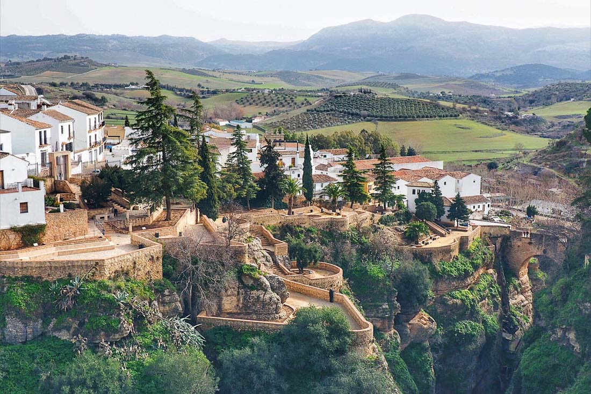
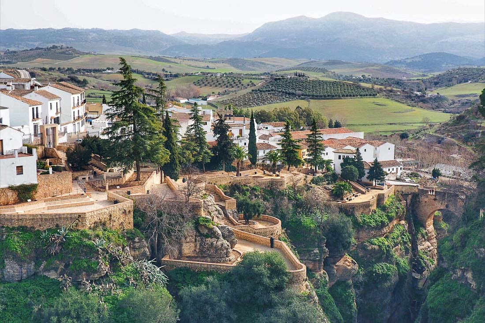
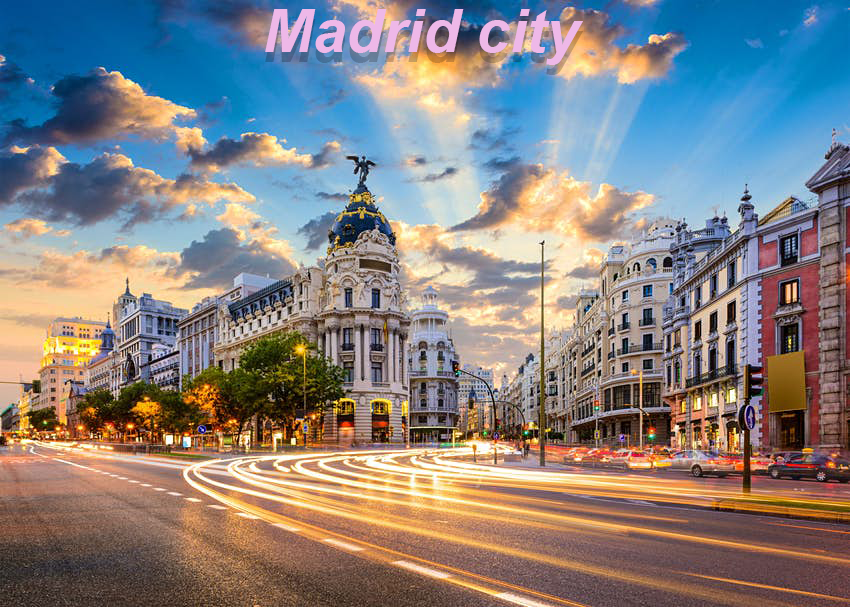
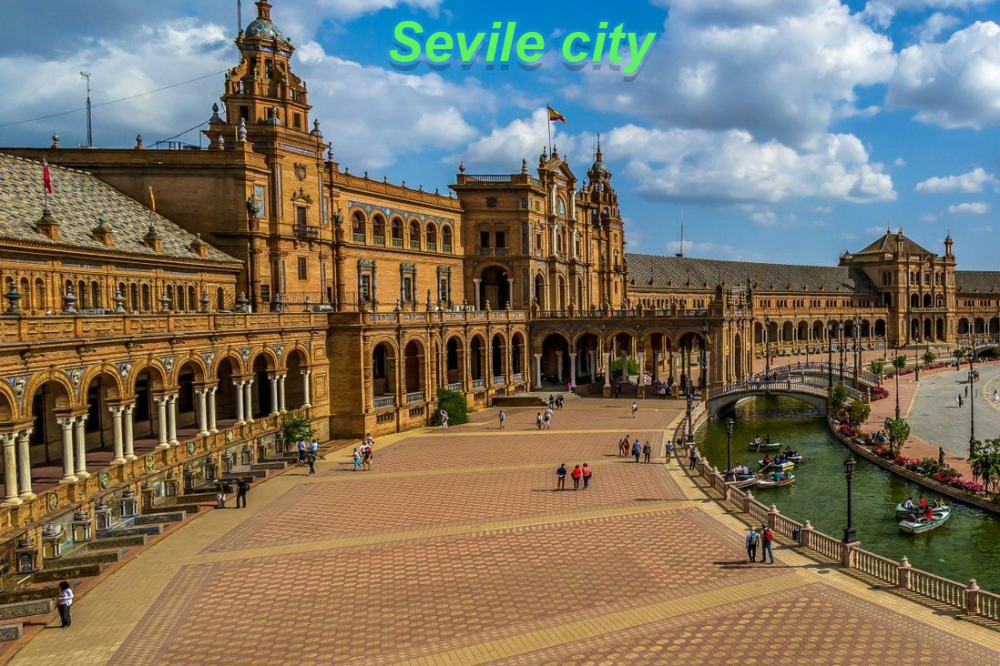
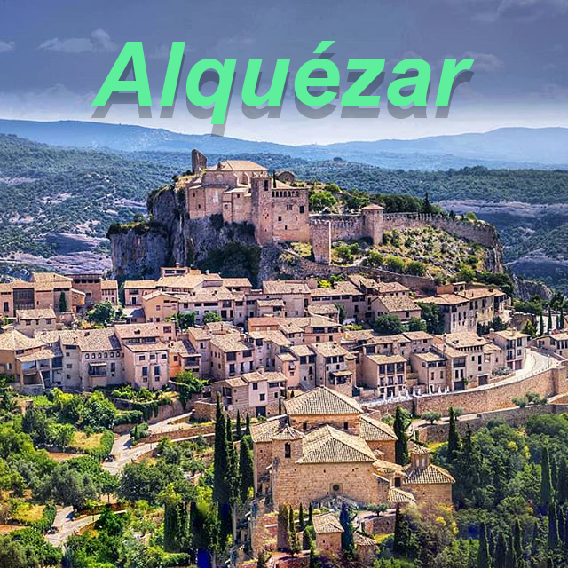
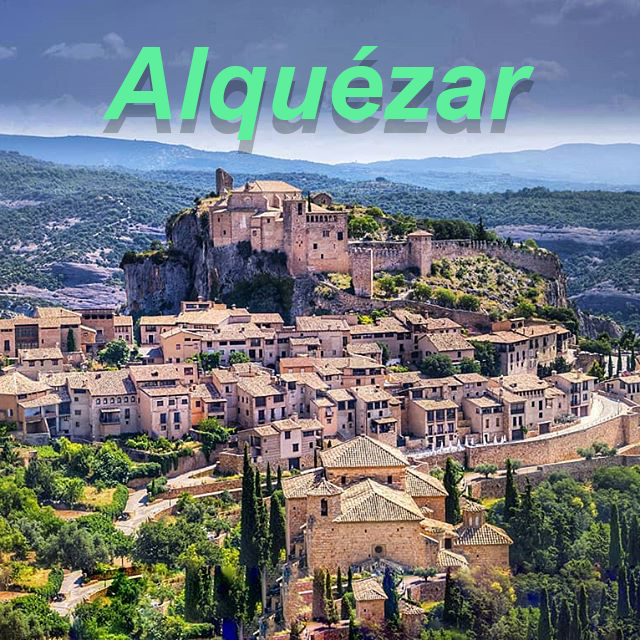

5 reasons to visit Spain

1. Stunning scenery

From the dramatic, imposing mountains to the countless glistening beaches that dot its coastlines, Spain is a country full of natural beauty and inspiring landscapes. If breath-taking views and unique scenery captures your attention then our top suggestion is to experience Tenerife, where you can enjoy the inspiring its volcanic views and panoramic scenery.
 

The largest of the Canary Islands, just south of Spain, Tenerife has a rugged, volcanic landscape as well as over 200 miles of coastline boasting a huge variety of flora and fauna. Rising over 2,000 feet above sea level, Los Gigantes cliffs are truly a natural beauty in this region and the gorgeous panoramic views of the surrounding scenery are a must-see! Another key highlight of Tenerife is Mount Teide, the third largest volcanic structure in the world! If you fancy a hike to the peak, the scenery at this level is awe-inspiring but don’t worry there’s also a cable car to the summit if you don’t fancy the blisters!


2. Fabulous Food


For many people, one of the highlights of Spain is, of course, the amazing food on offer. The country’s vibrant cities offer up Michelin-starred restaurants and lively tapas bars, while small-town cafés and restaurants offer up traditional dishes such as paella, seafood stew and chorizo, made with love from family-recipes. Spanish cuisine is known for being delicious, healthy and full of flavour, so there are many unique dishes available that will tempt your taste buds. If we’ve made you hungry then you should visit Costa Brava, a Spanish foodie destination that should not be missed! Most notably, the region’s capital city Barcelona is renowned for its authentic tapas bars. Tapas has become a popular concept in recent years but it is believed to have originated in Spain centuries ago where bar owners would cover their customer’s drinks with a small slice of bread or cheese to protect it from the surrounding dust. You’ll find hundreds of authentic eateries lining Barcelona’s labyrinthine streets, offering a wide variety of delicious tapas such as chorizo sausage, potatoes with a spicy tomato sauce, olives and fried squid to name but a few. Eating the night away off the beaten track in a local tapas bar will ensure you have an authentic, local experience!
3. Cosmopolitan Cities

From Madrid and Barcelona to Valencia and Seville…when it comes to must-see places in Spain, we really are spoiled for choice in Spain. The vibrant cities of Madrid and Barcelona are world-renowned for their arts and culture scene, fantastic food, incredible museums and impressive shopping options. Seville is another remarkable Spanish city, offering visitors a rich cultural experience, from flamenco dancing to architectural heritage. With so many options, it’s impossible to choose so you’ll have to just visit them all! One underrated gem and one of our top-picks is the vibrant, historical city of Salamanca! Most of the city centre is pedestrianised inviting visitors to walk around and discover the heart of the city. Salamanca is a bustling city with lively cafés, terraces and bars, perfect for a relaxing afternoon in the sun.


 

4. Vibrant villages
Southern Spain is a traveller’s paradise offering breathtaking scenery, stunning beaches and great weather…but one aspect that is often overlooked is the beautiful whitewashed villages and towns that dot the rugged hillsides of Andalucía Formerly farming and fishing villages, many of these local gems fell into disrepair over the years but have been brought back to life by locals and visitors who have recently rediscovered their charm. From quaint, cobbled streets and whitewashed houses to pretty ruins and churches, these vibrant villages are a charming attraction in themselves and although they have become popular with tourists in recent years, they have still managed to retain their ancient charm for now!
One of our top suggestions is the beautiful village of Frigiliana which is often voted as one of the prettiest in Spain. Located only a few kilometers from Nerja, Frigiliana is renowned for its quaint cobbled streets, mouth-watering gastronomy and beautiful arts and crafts. Visitors to the region can enjoy authentic experiences such as stopping off at one of the family-run bodegas where they can taste the special dessert wine which is produced in the region, while enjoying local gastronomic specialities such as fig bread and sugar-cane honey. And of course one of the highlights of Andalucía is to explore La Alhambra, an impressive fortress and UNESCO World Heritage Site.


With thousands of beaches to choose from, where will you go? One of our top suggestions has got to be a holiday in Costa de la Luz. Located in the region of Andalucía, near the Portuguese border, this area is renowned for its beautiful beaches and is a sun worshipper’s paradise! Costa de la Luz is not as well-known as some of Spain’s popular tourist resorts, meaning you can enjoy an array of unspoiled beaches, hidden coves and crystal-clear turquoise waters.
5. Beautiful Beaches
There are so many reasons to visit Spain, so many in fact, that it may actually be difficult to decide where to go!
go to top page
- table of contents
- 1. stunning scenery
- 2. fabulous food
- 3. compolitan cities
- 4. vibrant villages
- 5. beautiful beaches
There's nothing here.